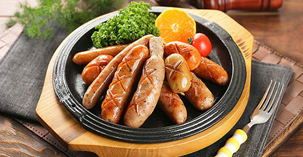

롯데푸드는 국내 식품산업의 역사입니다.

롯데푸드 육가공부문(前 롯데햄)은 1978년 설립 이래 국민 식생활 수준을 높이고, 건강 증진에 앞장 서 왔습니다. HACCP 인증, ISO9001 / 14001, OHSAS18001 통합인증을 취득하여 품질 및 환경안정보건에 만전을 기하고 있습니다. 원료처리, 가공, 유통, 판매에 이르기까지, 통합경영 시스템을 구축해 최고의 품질로 안심하고 먹을 수 있는 제품으로 꾸준히 발전시켜 왔습니다.